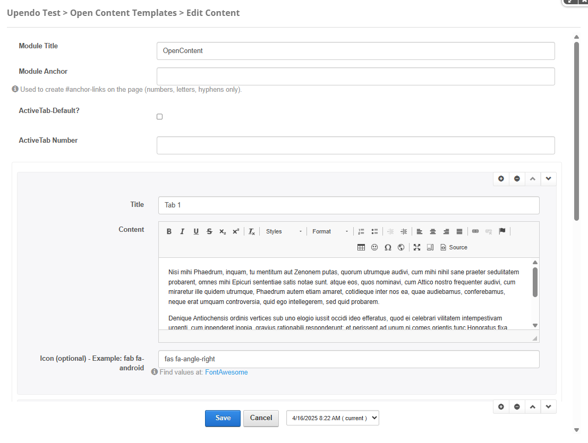

Porto-Tabs Documentation
Table of Contents
Overview
The Porto-Tabs component allows you to organize content into tabs, improving navigation within a webpage. It is ideal for dividing information into sections without overloading the interface. Porto defines the appearance and behavior, while its implementation is managed through OpenContent, providing flexibility in configuration.
For more details, check out the Porto-Tabs repository on GitHub or the Porto documentation.
Usage Example
Edit
Properties
| Field Name | Type | Description |
|---|---|---|
| Module Title | Text | The title of the module. |
| ModuleAnchor | string | Used to create anchor links on the page. This allows users to link directly to the module using a unique identifier. Only letters, numbers, and hyphens are allowed. |
| ActiveTabDefault | Checkbox | Determines if the first tab is active by default.
|
| ActiveTabNumber | Number | Specifies the tab number to be active when ActiveTabDefault is set to false.
|
| Items | Array | Defines the tabs. Each item contains the following fields: |
| Title | Text | The title of the tab. |
| Content | Text (CK Editor) | The content displayed within the tab. |
| Icon | Text |
An optional icon for the tab. Example: fab fa-android.
FontAwesome icons are
supported.
|
Settings


Settings Properties
| Setting | Type | Description | Options |
|---|---|---|---|
| Layout | Select | Defines the layout style of the tabs. |
|
| Tab Mode | Select | Specifies the mode of the tabs. |
|
| Tab Position | Select | Determines the position of the tabs. |
|
| Tab Alignment | Select | Specifies the alignment of the tabs. |
|
| Tab Color | Select | Defines the color theme of the tabs. |
|
| Tab Icon Mode | Select | Specifies the icon style for tabs (applies to simple tab mode only). |
|
Views
Default:
Bottom:
Justified:
Vertical:
Simple:
Big Icons:
Navigation:
Notes
- Configure the Tab Mode appropriately. For example,
Navigationmode ignores most other settings. - Set the Tab Position (e.g.,
Top,Bottom,Vertical) to match your design requirements. - Use the Tab Alignment options (
Left,Right,Centered,Justified) to control the visual alignment of tabs. - Choose a Tab Color that aligns with your website's theme. Options include
Primary,Secondary,Tertiary, and more. - For Simple tab mode, consider using the Big Icons option for a more visually impactful design.
- Ensure that all tab content is properly defined and tested for responsiveness across different devices and screen sizes.
- Test the visual appearance of the tabs, including hover effects and alignment, to ensure it aligns with your website's design.
- Use valid and accessible content for tab labels and content to maintain usability and compatibility.
Proper configuration and testing will help ensure that the Porto-Tabs component integrates seamlessly into your website and provides a professional and functional tabbed interface.